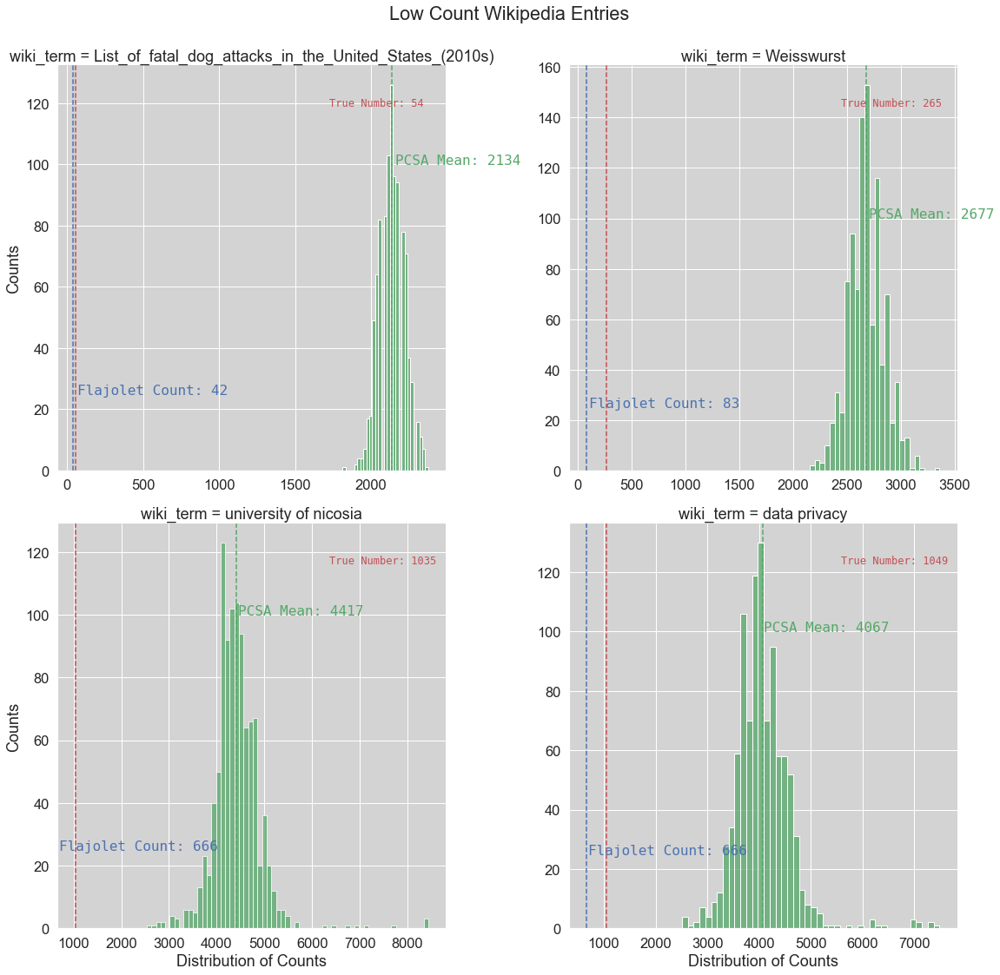
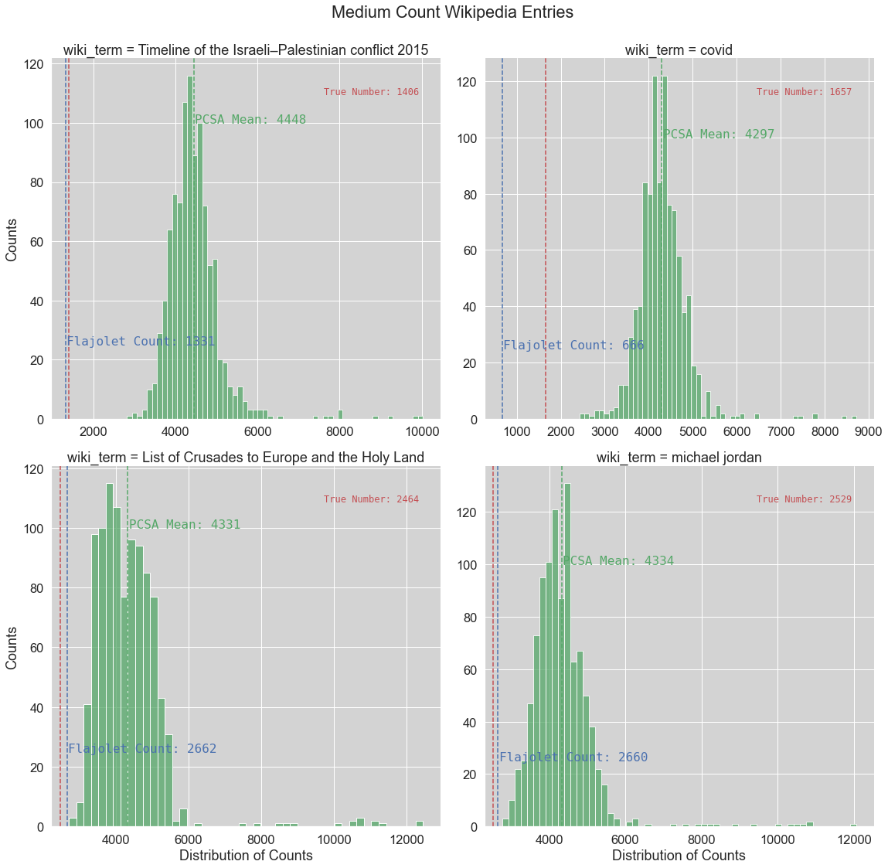
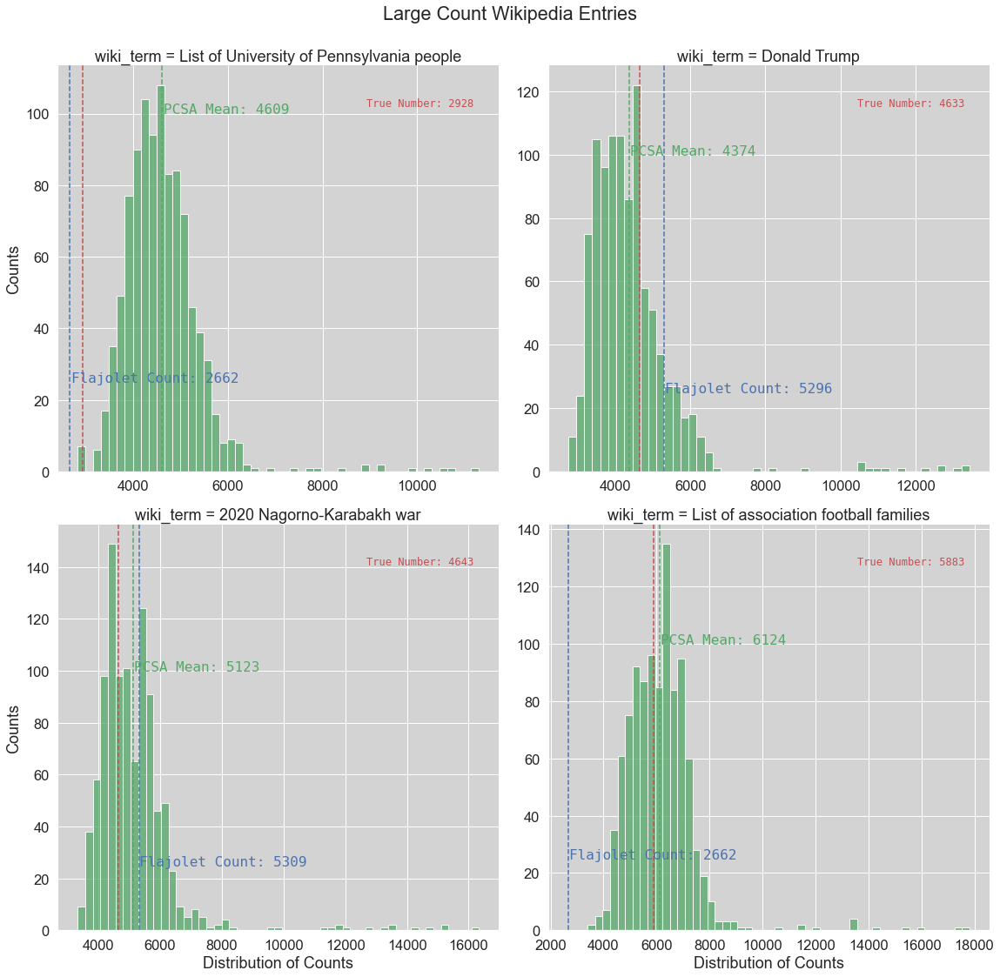

Flajolet-Martin Implemenation

Philipp Beer
Counting cardinalities of Wikipedia entries
University of Nicosia
COMP 552DL - Data Privacy and Ethics
Prof. Dr. Thomas Liebig
Motivation
- counting cardinalities with limited resources (Big Data)
- flow monitoring from stationary sensors
Wikipedia Entry Cardinalities
- Wikipedia large variety of cardinalities across its entries
- readily available API for data ingestion
Flajolet-Martin Algorithm
Basic Estimation Approach
Hash Function
word is denoted as: \[ x = (x_0, x_1, \dots, x_p) \]
Elements of x are hashed via: \[ hash(x) = (M + N \sum\limits_{j = 0}^p ord(x_j) 128^j)\: mod \: 2^L \]
Resulting Integer
is considered in its bit form: \[ y = \sum_{k \ge 0} bit(y, k)\,2^k \]
where p(y) represents the postion of the least-significant set bit.
Bitmap
\[p(y)\] for each word in stream is stored in a \[bitmap[0 \ldots L-1]\]
- Length of Bitmap \[L > log_2(n/nmap) + 4\]
Expected Behavior
If n is the number of distinct elements in M then:
- bitmap[0] is accessed approximately n/2 times
- bitmap[1] is accessed n/4 times
- …
In consequence
\[ i \gg \log_2\,n \] is expected to be zero \[ i \ll \log_2\,n \] is expected to be one \[ i \approx log_2\,n\] has a fringe of zeros and ones
Bias Factor
Flajolet and Martin identified a bias factor: \[ \varphi = 0.77351\cdots\]
Standard Deviation
Flajolet and Martin prove that under reasonable probablistic assumptions: \[ \sigma(R) \approx 1.12\] Therefore, result is typically 1 binary order of magnitude off (correction via nmap)
NMAP
Set of Hashing functions for each word \[ A = \frac{ R_1 + R_2 + \dots + R_m}m \]
PCSA
Probabilistic Counting with Stochastic Averages
Modification to basic approach
- use hashing function in order to distribute each word into one of m lots via: \[ \alpha = h(x)\,mod\,m\]
- update corresponding bitmap vector of alpha from h(x) \[ h(x)\: div\: m\] (floored)
Expectation
- distribution of records falls evenly into lots so that \[(1/\varphi)\,2^A\] is a reasonable approximation
Implementation
Hash Function
def hash_val(self, word: str, v: int, w: int) -> int:
l = list(word)
term1: int = 0
for i in range(len(l)):
term1 += ord(l[i])*128**i
return int((v*term1 + w) % 2**self.L)
Updating the bitmap
def update_bitmap(self, word: str) -> None:
# calculate hash value
for i in range(self.nmap):
# calculate hash with current set of values
hash_val = self.hash_val(word=word,
v=self.vs[i],
w=self.ws[i])
# find rightmost set bit in hash value
r = self.rightmost_set_bit(hash_val)
if r == None: # cases need to be ignored as element value is 0
continue
assert type(r) == int, 'r must be int'
if self.bitmaps[i, r] == 0:
self.bitmaps[i, r] = 1
Rightmost Set Bit
def rightmost_set_bit(self, v: int) -> int:
# using bit operations to identify position
# of least significant set bit
if v == 0:
return None
return int(math.log2(v & (~v + 1)))
Basic Estimation Approach
def fm(self) -> int:
# allowing for hashing of entire stream
vbitmap_update = np.vectorize(self.update_bitmap)
# contains hashed values for each element in stream
vbitmap_update(self.data_stream)
if self.optimization == 'reduce':
# reduce bitmap
red_bitmap = self.reduce_bitmaps(self.bitmaps)
R = self.leftmost_zero(red_bitmap)
return self.C*2**R
elif self.optimization == 'mean_r':
R = np.zeros((self.nmap,))
for i in range(self.nmap):
R[i] = self.leftmost_zero(self.bitmaps[i, :])
mean_R = np.mean(R)
return self.C*2**mean_R
PCSA Approach
def pcsa_bitmap(self, word: str) -> None:
hashedx = self.hash_val(word=word,
v=self.m,
w=self.n)
alpha = hashedx % self.nmap
beta = math.floor(hashedx/self.nmap)
assert isinstance(beta, int), "index is integer"
idx = self.rightmost_set_bit(beta)
self.bitmaps[alpha, idx] = 1
def fm_pcsa(self) -> int:
# allowing for hashing of entire stream
vbitmap_update = np.vectorize(self.pcsa_bitmap)
# contains hashed values for each element in stream
vbitmap_update(self.data_stream)
S = 0
for i in range(self.nmap):
R = 0
while (self.bitmaps[i, R] == 1) and (R < self.L):
R += 1
S += R
return math.floor(self.nmap/self.phi*2**(S/self.nmap))
Results
Search Terms
| Search Term | Size | True Unique Values |
|---|---|---|
| List of fatal dog attacks in the United States (2010s) | small | 54 |
| Weisswurst | small | 265 |
| university of nicosia | small | 1035 |
| data privacy | small | 1049 |
| Timeline of the Israeli–Palestinian conflict 2015 | medium | 1406 |
| covid | medium | 1657 |
| List of Crusades to Europe and the Holy Land | medium | 2464 |
| michael jordan | medium | 2529 |
| List of University of Pennsylvania people | large | 2928 |
| Donald Trump | large | 4633 |
| 2020 Nagorno-Karabakh war | large | 4643 |
| List of association football | large | 5883 |
Low Count Entries

Medium Count Entries

Large Count Entries

Discussion
- basic estimation is consistent and provides better accuracy compared to PCSA implementation
- PCSA has large distribution
- methods perform worst with low count streams
- PCSA becomes more performant with increase of unique values
- PCSA has significant compute performance advantage
Next Steps
- improve hashing function for PCSA approach
- review LogLog, SuperLogLog, HyperLogLog and review their increase in accuracy (trade-offs performance / accuracy)